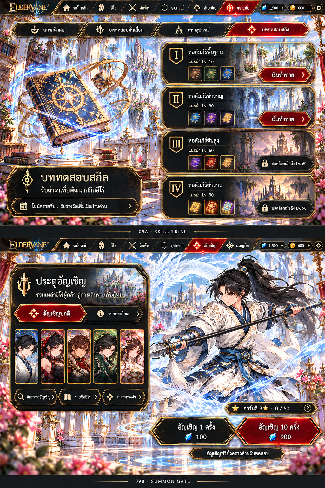
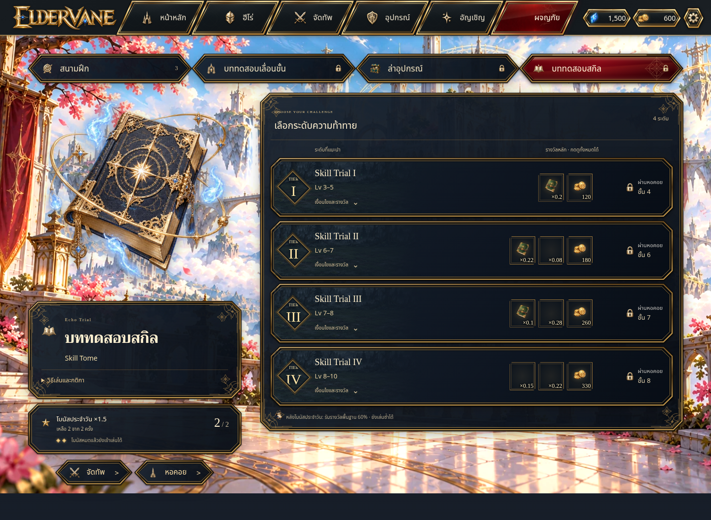
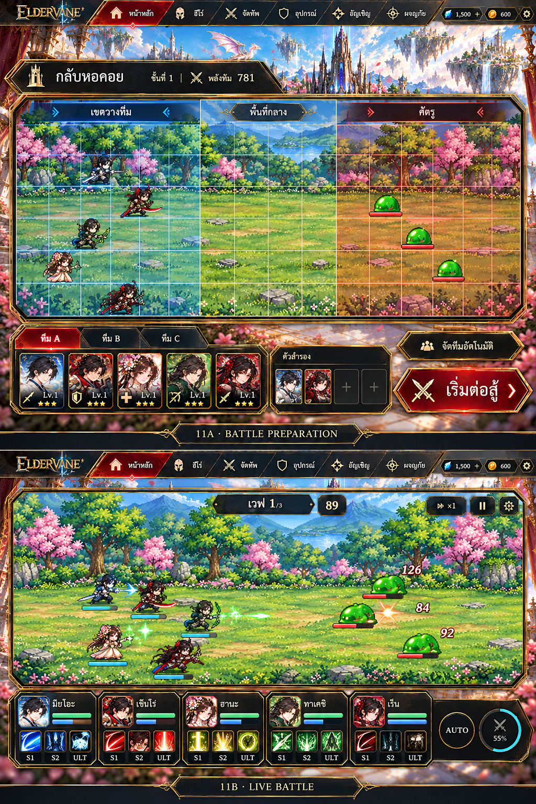
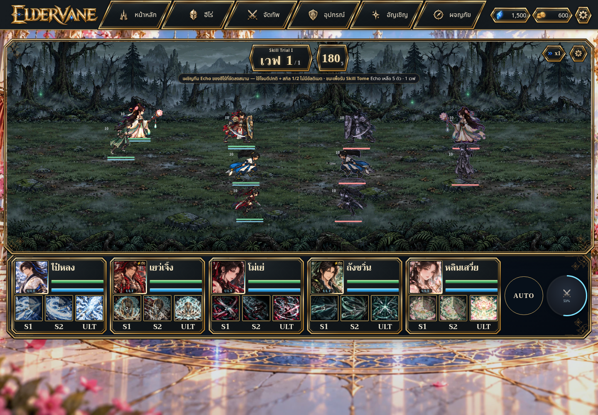
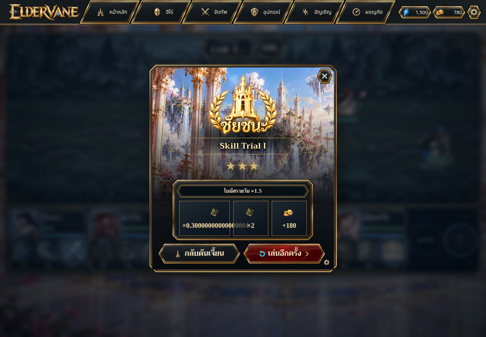
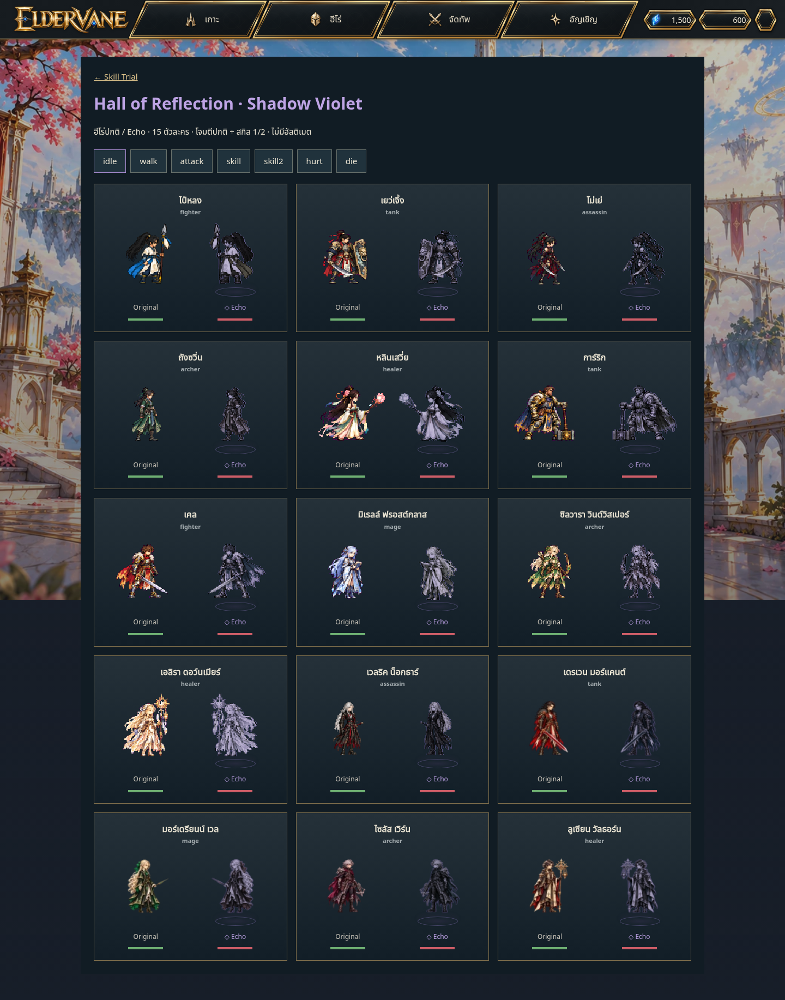

Left: existing design reference. Right: actual game at 1440×1000. Gameplay and Echo visuals follow the new written spec; existing layout retained. No claim of a new pixel-perfect redesign.





